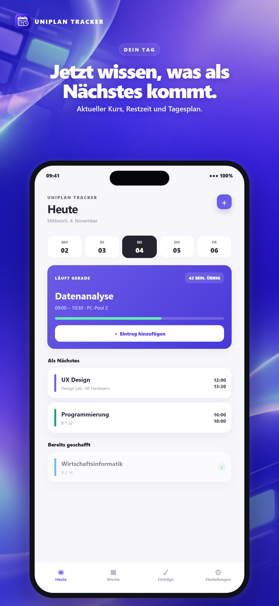
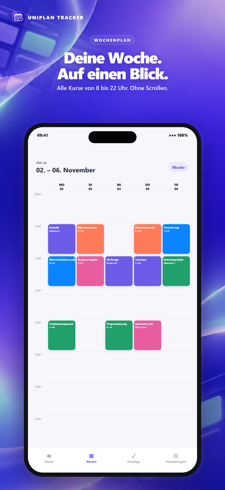
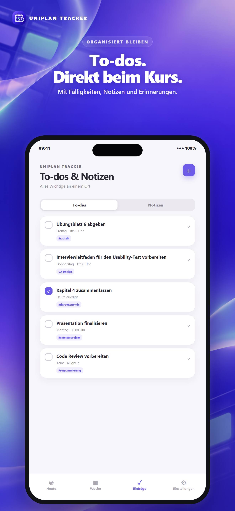
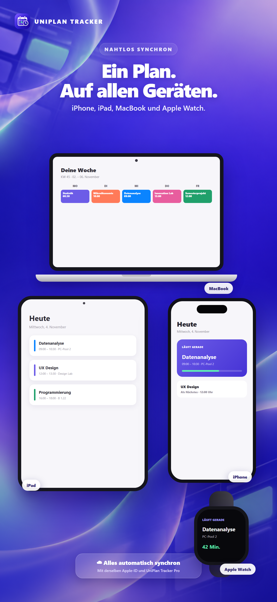
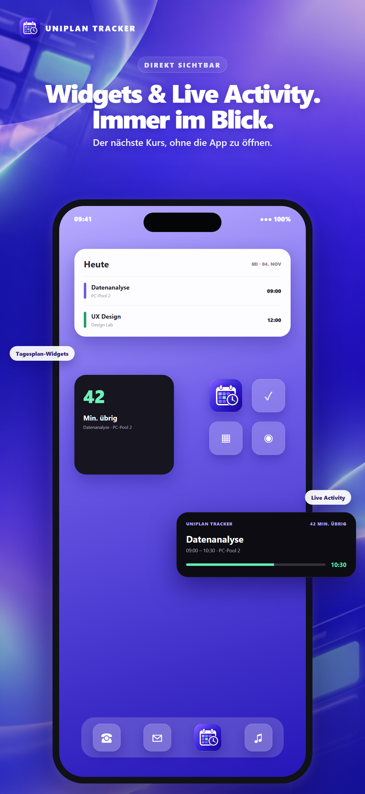

Komplette Woche
Alle Kurse von 8 bis 22 Uhr mit Tagen, Zeiten und Räumen direkt im Blick.
Stundenplan, To-dos und Notizen – übersichtlich, modern und auf allen deinen Apple-Geräten verbunden.

42 Minuten übrig · PC-Pool 2
Weniger Suchen, weniger Vergessen – und mehr Klarheit im Studienalltag.
Alle Kurse von 8 bis 22 Uhr mit Tagen, Zeiten und Räumen direkt im Blick.
Sieh sofort, welcher Kurs läuft und was als Nächstes ansteht.
Aufgaben, Fälligkeiten und Notizen passend zum jeweiligen Kurs.

Uhrzeiten vertikal, Wochentage horizontal – damit du deine gesamte Woche ohne Umwege erfassen kannst.

Ordne To-dos und Notizen einem Kurs zu, ergänze eine Fälligkeit und hake Erledigtes mit einem Tap ab.

Mit UniPlan Tracker Pro bleiben Stundenplan und Einträge auf iPhone, iPad und unterstützten Macs synchron. Die Apple Watch zeigt dir den aktuellen und nächsten Kurs.

Der nächste Kurs, die heutige Planung und die verbleibende Kurszeit – sichtbar, ohne die App erst öffnen zu müssen.
Schalte die geräteübergreifenden Funktionen frei und nutze UniPlan Tracker ohne Werbung.
UniPlan Tracker erscheint bald im App Store.
Support & häufige Fragen